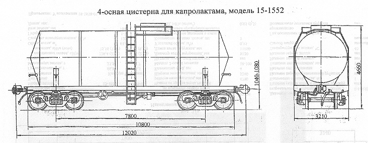

Назначение: для перевозки капролактама
Параметры
| Номер проекта | 1552.00.000 |
| Технические условия | ТУ 24.05.500-79 |
| Модель вагона | 15-1552 |
| Тип вагона | |
| Изготовитель | ПО "Ждановтяжмаш" |
| Грузоподъемность, т | 50 |
| Масса тары вагона, т | 26 |
| Нагрузка: статическая осевая, кН(тс) |
186,3(19,0) |
| погонная, кН/м(тс/м) | 62,0(6,32) |
| Объем котла, м3: полный |
55,2 |
| полезный | 49,5 |
| Скорость конструкционная, км/ч | 120 |
| Габарит | 1-ВМ(0-Т) |
| База вагона, мм | 7800 |
| Длина, мм: по осям сцепления автосцепок |
12020 |
| по концевым балкам рамы | 10800 |
| Высота от уровня верха головок рельсов максимальная, мм | 4660 |
| Количество осей, шт. | 4 |
| Модель 2-осной тележки | 18-100 |
| Наличие переходной площадки | нет |
| То же с ручным тормозом | нет |
| Наличие стояночного тормоза | есть |
| Диаметр котла внутренний,мм | 2600 |
| Длина котла наружная,мм | 11300 |
| Количество верхних люков, шт. | 1 |
| Наличие уклона котла к сливному прибору | есть |
| Давление в котле при транспортировке, МПа(кгс/см2) | 0,2(2,0) |
| Рабочее давление в системе разогрева, МПа(кгс/см2) | 0,06(0,6) |
| Давление создаваемое в котле при гидровлическом испытании, МПа(кгс/см2) | 0,5(5,0) |
| Давление в системе разогрева при гидравлическом испытании, МПа(кгс/см2) | 0,1(1,0) |
| Потребляемаемая мощность при разогреве, кВТ | |
| Рабочая температура в котле, ºС | +40 - +100 |
| Напряжение питания электронагревателя, В | |
| Время сохранения груза в жидком состоянии, сут | 4,9 |
| Скорость равномерного разогрева продукта по всей поверхности котла, ºС/ч | 8 |
| Способ погрузки и выгрузки | Верхний передавливанием, вакуумнасосом |
| Теплоноситель | Вода, пар |
| Максимально допустимая температура загружаемого продукта, ºС | +95 |
| Год постановки на серийное производство | 1972 |
| Возможность установки буфера | нет |